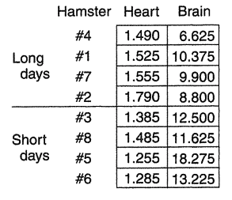

Repeated Measures (cont.)
Announcements
- HW 8 posted and due Friday Apr 26 11:59p
- Office hours
- Thurs: 2:45p - 4:00p
- Friday: 10:50a - 12:05p
- Where to get HW help
- Spinelli center tutoring Sun-Thurs 7-9p, Sabin-Reed 301.
- Post questions to #hw8-questions channel on Slack!
- Direct message me on Slack.
Agenda
- MP2 Data Collection!!
- Repeated measures (cont.)
MP2 data collection
Step 1:
- If you’re approved:
- 5 minutes to go through the checklist.
- Paste anonymous survey link in the spreadsheet.
- If you’re ready, work on your homework!
Step 2:
- 20 min to participate in as many studies as you can!
- Please only participate in audio studies if you have headphones
- Last chance to collect data in class
Repeated Measures
Between Subjects versus Within Subjects
Thought experiment:
Think of your MP1 project. What would your study have been like if every participant saw every condition and gave a response after each condition?
This would have been a within-subjects design. What you actually did for MP1 was a between-subjects design.
3-min free write: What would have been the pros and cons of doing your MP1 this way?
Diabetic Dogs
The disease diabetes affects the rate of turnover of lactic acid in a system of biochemical reactions called the Cori cycle. This experiment compares two methods of using radioactive carbon-14 to measure rate of turnover. Method 1 is injection all at once, and method 2 is infused continuously. 10 dogs were sorted into two groups, 5 were controls and 5 had their pancreas removed (to make it diabetic). The rate of turnover was then measured twice for each dog, once for each method. The order of the two methods was randomly assigned.
Split-Plot Design
If you suspect a design in a split-plot design, you should be able to answer the following questions:
- What are the whole plots, that is, what is the nuisance factor?
- What is the between-blocks factor? Is it observational or experimental?
- What is the within-blocks factor? Is it observational or experimental?
Osomoregulation
Worms that live at the mouth of a river must deal with varying concentrations of salt. Osomoregulating worms are able to maintain relatively constant concentration of salt in the body. An experiment wanted to test the effects of mixtures of salt water on two species of worms: Nereis virens (N) and Goldfingia gouldii (G). Eighteen worms of each species were weighted, then randomly assigned in equal numbers to one of three conditions. Six worms of each kind were placed in 100% sea water, 67% sea water, or 33% sea water. The worms were then weighted after 30, 60, and 90 minutes, then placed in 100% sea water and weighted one last time 30 minutes later. The response was body weight as percentage of initial body weight.
Parsnip Plants
Under the control conditions of this study, wild parsnip plants averaged about a thousand seeds from their first set of flowers (primary umbels), about twice as many from the second set of flowers, but only about 250 from the third set. For plants attacked by the parsnip webworm, which destroyed most of the primary umbels, the pattern was quite different: the seed production from primary, secondary, and tertiary umbels averaged about 200, 2400, and 1300, respectively.
Formal ANOVA for the Split-Plot Design
\[{y}_{ijk}={\mu}+{\alpha}_{i}+{\beta}_{j(i)}+{\gamma}_{k}+({\alpha\gamma})_{ik}+{e}_{ijk}\]
- \({\mu}\) is the benchmark
- \({\alpha}_{i}\) effect of level i of the between-blocks factor, \(i\) from \(1\) to \(a\)
- \({\beta}_{j(i)}\) effect of block \(j\) (for level \(i\) of the between block factor), \(j\) from \(1\) to \(n\)
- \({\gamma}_{k}\) effect of level \(k\) of the within-block factor, \(k\) from \(1\) to \(t\)
- \(({\alpha\gamma})_{ik}\) interaction effect for level \(i\) of the between-blocks factor with level \(k\) of the within-blocks factor
ANOVA Source Table for the Split-Plot Design
| Source | SS | df | MS | F |
|---|---|---|---|---|
| Between | \(t\frac{N}{a}\sum_{i=1}^{a}(\bar{y}_{i..}-\bar{y}_{...})^{2}\) | \(a-1\) | \(\frac{{SS}_{A}}{{df}_{A}}\) | \(\frac{{MS}_{A}}{{MS}_{B}}\) |
| Blocks | \(t\sum_{i=1}^{a}\sum_{j=1}^{n}(\bar{y}_{ij.}-\bar{y}_{i..})^{2}\) | \(N-a\) | \(\frac{{SS}_{B}}{{df}_{B}}\) | \(\frac{{MS}_{B}}{{MS}_{E}}\) |
| Within | \(Na\sum_{k=1}^{K}(\bar{y}_{..k}-\bar{y}_{...})^{2}\) | \(t-1\) | \(\frac{{SS}_{T}}{{df}_{T}}\) | \(\frac{{MS}_{T}}{{MS}_{E}}\) |
| Interaction | \(\sum_{i=1}^{a}\sum_{k=1}^{t}\frac{N}{a}(\bar{y}_{i.k}-\bar{y}_{i..}-\bar{y}_{..k}+\bar{y}_{...})^{2}\) | \((a-1)(t-1)\) | \(\frac{{SS}_{AT}}{{df}_{AT}}\) | \(\frac{{MS}_{AT}}{{MS}_{E}}\) |
| Error | \(\sum_{i=1}^{a}\sum_{j=1}^{N}\sum_{k=1}^{t}({y}_{ijk}-\bar{y}_{i.k}-\bar{y}_{.j.}-\bar{y}_{..k}+\bar{y}_{i..})^{2}\) | \((N-a)(t-1)\) | \(\frac{{SS}_{E}}{{df}_{E}}\) |
Blocking + Random Assignment + Crossing
Design 4: Split Plot/Repeated Measures Design

Blocking + Random Assignment + Crossing
Design 4: Split Plot/Repeated Measures Design

Split-Plot Analysis in R
Crabgrass
The purpose of this experiment was to study the way one species of crabgrass competed with itself and with another species for nitrogen (N), phosphorus (P), and potassium (K). Bunches of crabgrass were planted in vermiculite, in 16 Styrofoam cups; after the seeds head sprouted, the plants were thinned to 20 plants per cup. Each of the 16 cups were randomly assigned to get one of 8 nutrient combinations added to its vermiculite. For example, yes-nitrogen/no-phosphorus/yes-potassium. The response is mean dry weight per plant, in milligrams.
Creepy Animals
The effects of exposure to images of different domestic animal species in either aggressive or submissive postures on mood was tested with a split-plot/repeated measures design. Using a computer to randomize, participants were randomly assigned to either view images of dogs or images of cats. All participants saw both an aggressive animal and a submissive animal, and their moods were assessed via self-report after each image. The order of presentation (aggressive then submission, or submissive then aggressive) was randomized to control for order effects.